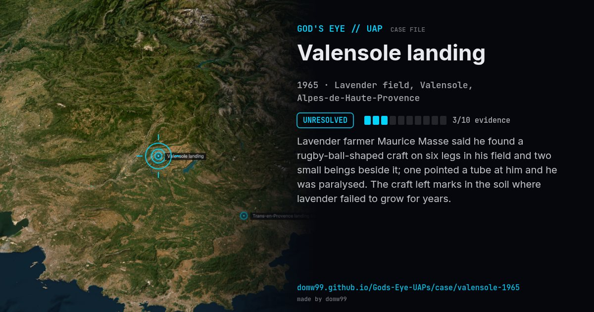

Valensole landing
UNRESOLVED

Lavender farmer Maurice Masse said he found a rugby-ball-shaped craft on six legs in his field and two small beings beside it; one pointed a tube at him and he was paralysed. The craft left marks in the soil where lavender failed to grow for years.
Explanation
Investigated by the Gendarmerie; the ground marks and the effect on lavender plants were documented but never explained.
What was seen
Shape: Egg-shaped craft on legs; two small beings
Witnesses: Farmer Maurice Masse
Duration: A few minutes
Browse
- France
- 1960s
- Unresolved
- Landing and trace cases
- Official government documents
- Physical traces
- Spheres and orbs